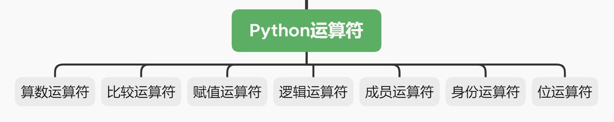
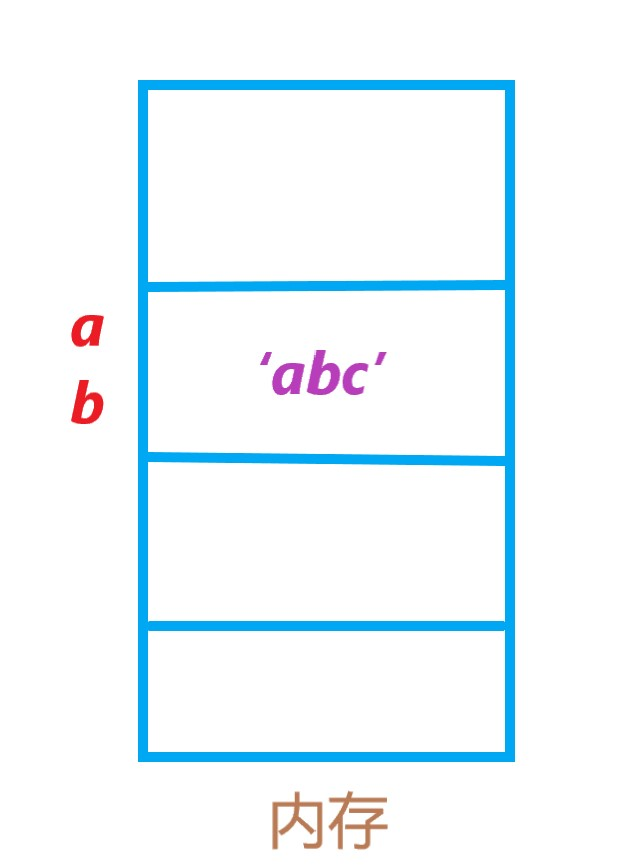
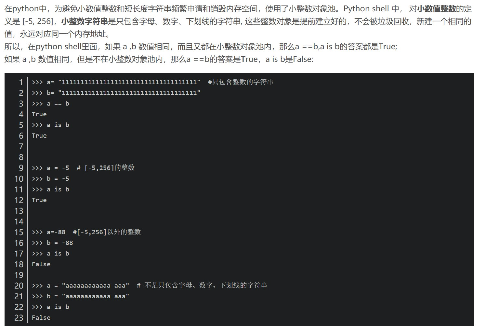
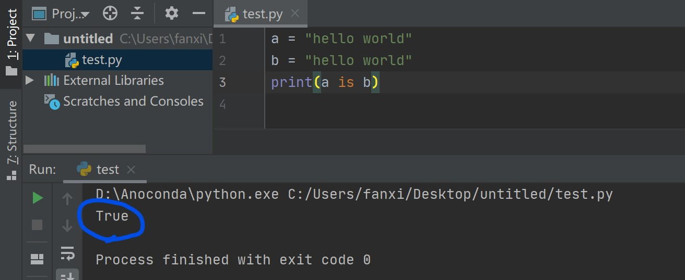
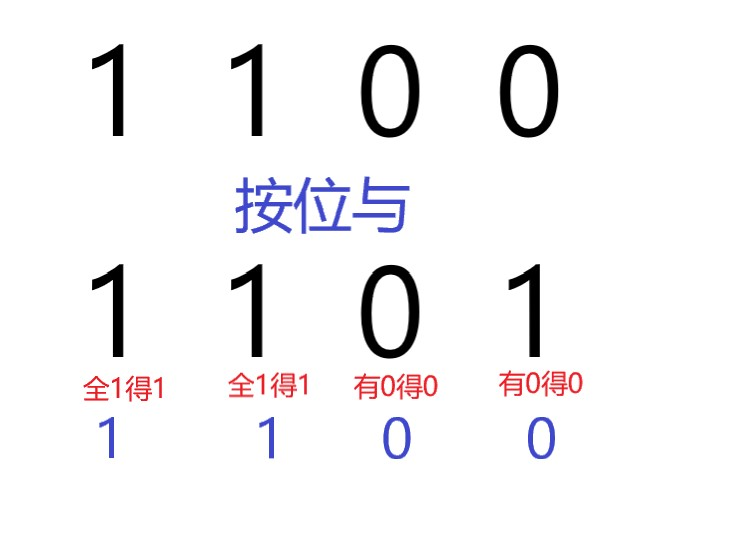
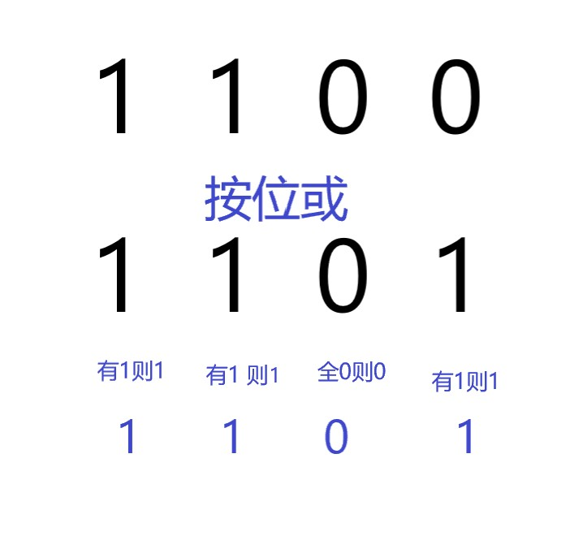
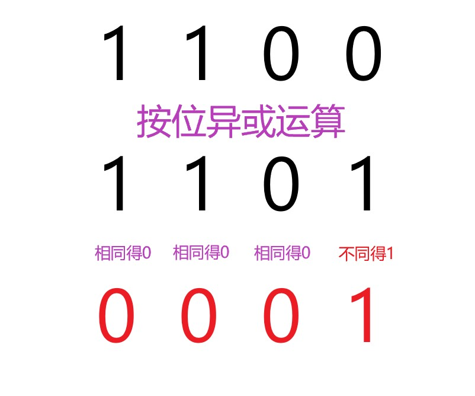

小小运算符，构筑大世界-Python基础连载（七）
开篇
本期将介绍Python的运算符。

在正式开始之前，应该给运算符下个教科书式定义：
1 | 运算符用于执行程序代码运算，会针对一个以上操作数项目来进行运算(百度百科) |
好吧，这定义越看越晕。不管他了，咱们直接开始，在实际操作中理解运算符！
需要注意的是，你如果见到x=x+1这种操作，千万不要把这与数学上的操作混为一谈。
前面也提起过，在数学上，x=x+1中的=是等于的意思，而在编程语言中，=是赋值的意思，将=右边的值赋值给=左边。
所以，x=x+1在数学上是不成立的，但是在编程语言中，是将变量x做了加1的操作。
算数运算符
1. + ：加法运算
2. -：减法运算
3. *：乘法运算
4. / ：普通除法运算
5. // ：整数除法（整除）运算
6. ** ：平方运算，a**b代表求a的b次方
7. % ：取余运算
上个栗子：
1 | 1+12 |
比较运算符
1. ==：比较两个数是否相等
2. !=：比较两个数是否不等
3. >：比较两个数是否前者大于后者
4. <：比较两个数是否前者小于后者
5. >=：比较两个数是否前者大于等于后者
6. <=：比较两个数是否前者小于等于后者
下面的栗子中的返回值都是上期所讲的布尔类型，代表真或假。
1 | a=1 |
赋值运算符
1. =：简单赋值运算符，将赋值运算符右侧的值赋值给左侧
2. +=：加法赋值运算符，a+=b等价于a=a+b
3. -=：减法赋值运算符，a-=b等价于a=a-b
4. *=：乘法赋值运算符，a*=b等价于a=a*b
5. /=：除法赋值运算符，a/=b等价于a=a/b
6. //=：整除赋值运算符，a//b等价于a=a//b
7. **=：幂赋值运算符，a**=b等价于a=a**b
8. %=：取模赋值运算符，a%=b等价于a=a%b
1 | >>> x=3#将3赋值给x |
逻辑运算符
1.and：布尔'与'
在a and b中，如果a与b的值都是True，那么就返回True,否则，只要有一个为False，那么就返回False。
1 | a=1 |
2.or：布尔'非'
在a or b中，只要有一个为True，就返回True，只有当两者都为False是，才返回False。
1 | a=1 |
3.not
相当于一个取反的操作
1 | a=1 |
成员运算符
1. in
在指定的序列中查找指定的值，如果能找到则返回True，否则返回False。
这里的序列可以是列表，可以是字符串，也可以是其他数据类型。鉴于目前本系列只讲了字符串，所以这里用字符串举例，其它数据类型其实也一样，以后遇到会说明的。
1 | s='hello world' |
2.not in
与in的功能正好相反，直接看栗子：
1 | ss='I just love Python' |
身份运算符
1. is
相信你还记得在字符串的增删改查那一期中，我们曾介绍过id()，当时是用它来查看两个变量中所存内容是不是来自同一个小房间（内存地址单元）。
这里的is所做的事情和上面所做事情基本是一样的
a is b就等价于id(a)==id(b)，这两个表达式都会返回一个布尔值，用来表明该表达式的对与错。
如果a与b所在的内存地址相同，则返回True，否则返回False。
对于入门来说，了解关于is的以上使用说明就足够了，本部分接下来的内容对于小白来说可能会感到难以理解，没关系，你大可跳过，以后用的多了自然就理解了。
举个栗子：
【注】以下实例均在Python自带的IDLE(3.7)中运行
【栗子1】
1 | a='abc' |
这个栗子中，在内存（房子）中开辟了一块内存空间（小房间），用来存储字符串'abc'，然后让变量a与b都指向这一块内存空间，就像这样：

再举个数字的栗子：
【栗子2】
1 | a=1 |
这和上面的的字符串栗子的解释基本一样，只需将上图中的abc换成数字1即可。
但是，有一点要提出来的是，并不是所有的字符串和数字都是这样的，看下面的栗子：
【栗子3】
1 | a="hello world" |
【栗子4】
1 | c=257 |
惊不惊喜，意不意外？
究其原因，是因为Python中设置了一个“小整数对象池”，里面存积着许许多多的对象。如果你所创建的对象（这里先按照变量来理解就行）中的内容(假定内容为xxx）包含在在这个“小整数对象池”里面，那么当有两个不同的变量的内容都是xxx时，这两个变量就会同时指向这一块存储了xxx的内存空间。
如果xxx不包含在“小整数对象池”中，那么就会像【栗子3】和【栗子4】中一样，不同的变量，即使内容相同，也会指向不同的内存空间。
那你肯定想要知道，这个“小整数对象池”中的内容都有哪些？
我也不知道~(\手动狗头)
不过经过一番狂搜，我找到了如下答案：

（注：图中所讲的python shell就是我们一直说的IDLE。）
到这里就可以解释本部分的4个栗子了：
【栗子1】中的abc只由字母组成，【栗子2】中的1属于[-5,256]，所以两个变量可以指向同一块内存空间。而【栗子3】中的hello world中包含了空格，【栗子4】中的257不属于[-5,256]，因此不同的变量即使值相同，也会被存储在两块不同的内存空间中。
还需要说明的是，以上解释仅仅是针对IDLE,也就是图中所写python shell，如果你换了另一款PyCharm，那情况又会不一样。(这算是一种优化吧)。
这是我在PyCharm上的运行结果：

2.is not
相当于是is的取反操作，a is not b等价于id(a)!=id(b)。
位运算符
建议小白同学跳过这一部分，因为涉及到了计算机组成原理中的一些内容。
1.&：按位与运算符
这里的与和前面的逻辑运算符中的’布尔与’中的与是一个意思，所以，按位与运算，就是把参与运算的两个值先转换成二进制形式，然后逐位对应做and运算，对应位全为1则结果为1，否则只要有一个是位是0结果便是0。
举个栗子就清楚啦：
1 | x=12 |
x和y对应的二进制表示分别为0b1100 、0b1101，注意0b是二进制的前缀，用来表明这是一个二进制数，并无数学意义。
1 | print(bin(x&y)) |
所作运算得具体过程如下图所示：

2.|：按位或运算符
和&一样，只是对应位做的不是and运算，而是做or运算：
1 | print(bin(x|y)) |

3.^：按位异或运算符
对应位做异或运算，其余同上。
异或规则：对应位相同得0，不同得1
1 | print(bin(x^y)) |

4. ~：按位取反运算符
这里涉及到了计算机组成原理中的知识，不必深究，只需了解公式~x=-(x+1)即可。
1 | x12 |
按照公式~x=-(x+1)来走一遍：
1 | z=x+1 |
验证完毕。
5. <<与>>：左移运算符和右移运算符
也建议直接了解下以下公式：
左移m位，相当于原来的10进制数字乘以2的m次方，即new_x=x*(2**m)。
右移m位，相当于原来的10进制数字除以2的m次方并取整，即new_x=x//(2**m)。
1 | x |